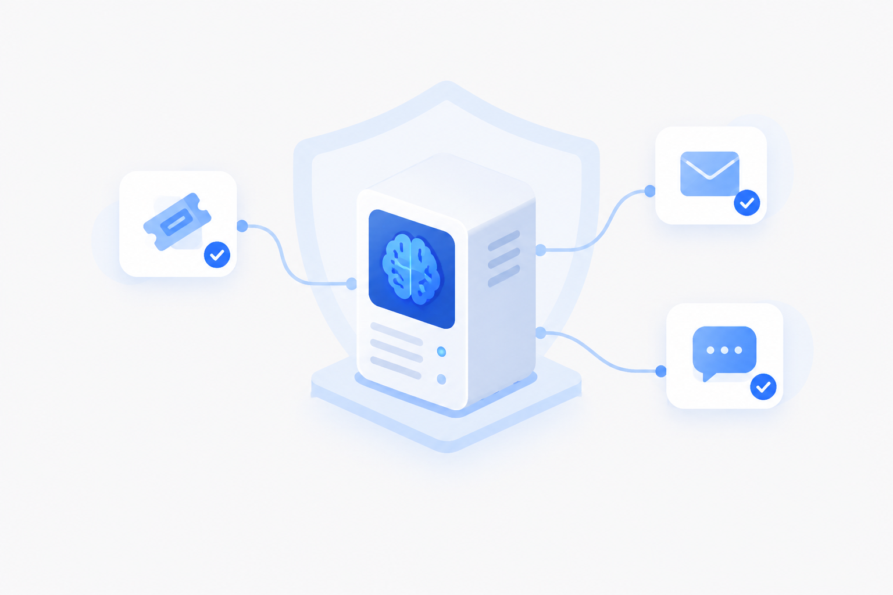

laya-setup 把「建环境 → 下权重 → 起服务 → 管理」全部自动化。Windows / Linux / macOS 通用，自带 Web 管理面板与 AI Agent Skill。本地推理，隐私不出本机。

$ ./start.sh [onekey] creating virtual environment ... [onekey] installing dependencies + PyTorch ... [onekey] 准备下载模型权重 (~840 MB) [onekey] 国内用户 → 镜像源 https://hf-mirror.com [onekey] 海外用户 → https://huggingface.co [onekey] starting API on http://127.0.0.1:8399 ... ✓ Laya local decision API — running
venv、torch、模型权重、服务启停……一键启动替你包办。
不用懂 Python / PyTorch / 模型部署，双击或一行命令即可。
默认国内镜像，海外可切官方源，ModelScope 备选，失败给手动指引。
Windows / Linux / macOS 逻辑统一，自动处理平台差异。
浏览器直接打开、零额外依赖，点按钮启停服务、看状态、看日志。
Laya 原生与 TypeSafe 兼容 API；内置 Skill 供各类智能体直接学会调用。
全流程本机推理，敏感工单 / 邮件 / 内部数据不出境。
选择你的系统，剩下的交给它。
start-gui 本地起服务并自动打开浏览器：启停服务、健康检查、下载权重、安装依赖、实时日志，尽在掌握。
给一段内容 + 类型化问题，单次前向返回带校准概率的答案。
意图分类、紧急度评分、流失风险，一个请求全部返回。
越狱 / 注入 / 敏感数据的本地判定，给 LLM 加一道闸。
类别 / 垃圾 / 钓鱼 / 是否需回复，自动路由。
标准 Agent Skill，Claude Code / Cline / Codex 读一个文件就会调用。
不需要。CPU 即可运行（单次约 35–400ms）。可用 onekey.py gpu 启用 NVIDIA CUDA 加速，macOS 用 CPU/MPS。
约 840MB。默认走国内镜像 hf-mirror.com，海外可切官方 huggingface.co，也可从 ModelScope 手动下载放入 models/laya/。
Laya 不生成文本，只对类型化问题返回带校准概率的判断，适合分流/分诊/护栏等决策场景，且完全本地，隐私数据不出本机。
可以。HTTP 端设置 TYPESAFE_BASE_URL 即可作为 TypeSafe 兼容替代；或加载内置 Agent Skill（skills/laya/SKILL.md），各类智能体即可学会调用。